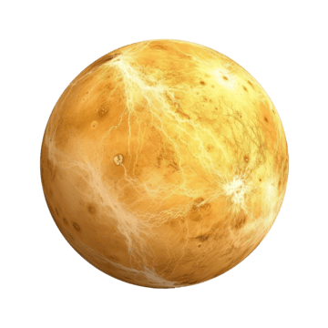

Venus |
 |
|
Venus es a menudo llamado el "planeta hermano" de la Tierra debido a su tamaño y composición similares. Sin embargo, ahí terminan las semejanzas. Envuelto en una atmósfera densa y tóxica de dióxido de carbono y nubes de ácido sulfúrico, Venus es el planeta más caliente de nuestro sistema solar, incluso más que Mercurio, debido a un efecto invernadero descontrolado. Tipo de cuerpo: Planeta rocoso (terrestre). Edad estimada: 4.600 millones de años. Distancia media al Sol: 108,2 millones de kilómetros (0,72 Unidades Astronómicas). La luz solar tarda aproximadamente 6 minutos en llegar. Diámetro: 12.104 kilómetros (es casi el 95% del tamaño de la Tierra). Masa: Representa el 81,5% de la masa de la Tierra. Temperatura media: 464 °C (una temperatura constante tanto de día como de noche que puede derretir el plomo). Presión atmosférica: 92 veces la de la Tierra (equivalente a estar a 900 metros bajo el mar). |